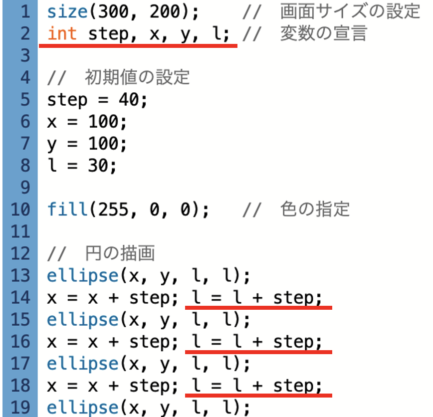

問題のコード
プログラムの実行画面

解説
- (1) int型の変数step, l, x, yをこの順にまとめて宣言してください
- (2) 実行画面を参考にlの値を示すものとして、正しいプログラムを選択してください。
STEP1と同じ解法なので、解説は省略します。
まず、実行結果を見てみよう。
少しずつ、円が大きくなっているため符号は
続いて、どの変数が当てはまるのか数値に注目して見ていく。
数値100を格納している変数xとyのどちらかを当てはめたとする。
この場合、直径100ずつ円は大きくなっていくわけだが画面サイズが
数値40を格納している変数stepを当てはめたとする。
この場合、直径40ずつ円が大きくなっていくため実行結果のように表示されることとなる。
よって、